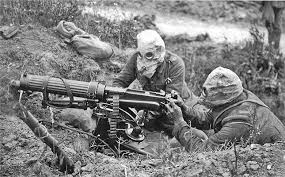

LAS GUERRAS MAS GRANDES DE LA HISTORIA

lLa guerra es un conflicto, generalmente armado, en el que intervienen dos o más partes. Se aplica aplica a una lucha o enfrentamiento armado entre países o grupos de personas. Con este significado, se utiliza para formar conceptos como guerra civil, buque de guerra, prisionero de guerra o posguerra.
La guerra, afirma el Marqués de Olivart, es el litigio entre las naciones que defienden sus derechos, en el cual es el juez la fuerza y sirve de sentencia la victoria. Hugo Grocio la definió como status per vincertatium qua tales sunt. Por su parte, Alberico Gentilis afirmó que Bellum est armorum publicorum ensta contentio.12 Funk - Bretano y Alberto Sorel escribieron: "La guerra es un acto político por el cual varios Estados, no pudiendo conciliar lo que creen son sus deberes, sus derechos o sus intereses, recurren a la fuerza armada para que esta decida cuál de entre ellos, siendo más fuerte, podrá en razón de la fuerza, imponer su voluntad a los demás.
LAS 5 GUERRAS MAS GRANDES DE LA HISTORIA
1.-guerra de los balcanes
Las guerras de los Balcanes fueron dos guerras ocurridas en el sureste de Europa de 1912 a 1913. La primera enfrentó al Imperio otomano con la llamada Liga de los Balcanes formada por Bulgaria, Montenegro, Grecia y Serbia.
.CLICK
2.-Las guerras Napoleónicas
Las guerras napoleónicas, también llamadas guerras de la Coalición, fueron una serie de conflictos bélicos que tuvieron lugar durante el tiempo en que el emperador Napoleón I Bonaparte gobernó en Francia.
.CLICK
3.-Guerra de Vietnam
La Guerra de Vietnam, llamada también Segunda Guerra de Indochina, y conocida en Vietnam como Guerra de Resistencia contra América fue un conflicto bélico librado entre 1955 y 1975 para impedir la reunificación de Vietnam bajo un gobierno comunista.
.CLICK
4.-Primera guerra mundial
La Primera Guerra Mundial, anteriormente llamada la Gran Guerra, fue una confrontación bélica centrada en Europa que empezó el 28 de julio de 1914 y finalizó el 11 de noviembre de 1918, cuando Alemania aceptó las condiciones del armisticio.
.CLICK
5.-Segunda guerra mundial
La Segunda Guerra Mundial fue un conflicto militar global que se desarrolló entre 1939 y 1945. En ella se vieron implicadas la mayor parte de las naciones del mundo, incluidas todas las grandes potencias, agrupadas en dos alianzas militares enfrentadas: los aliados de la Segunda Guerra Mundial y las potencias del eje.
.CLICK